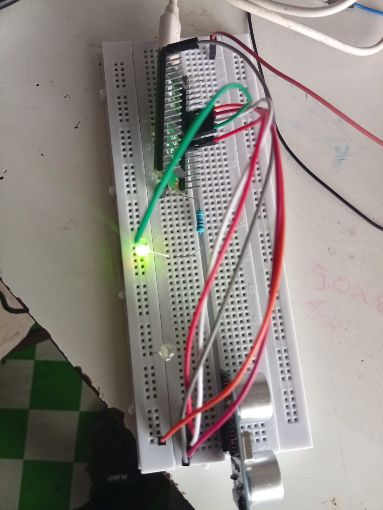
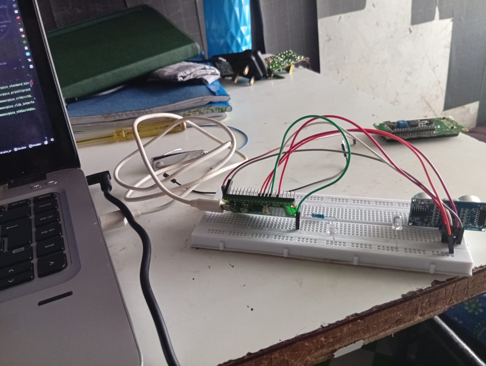
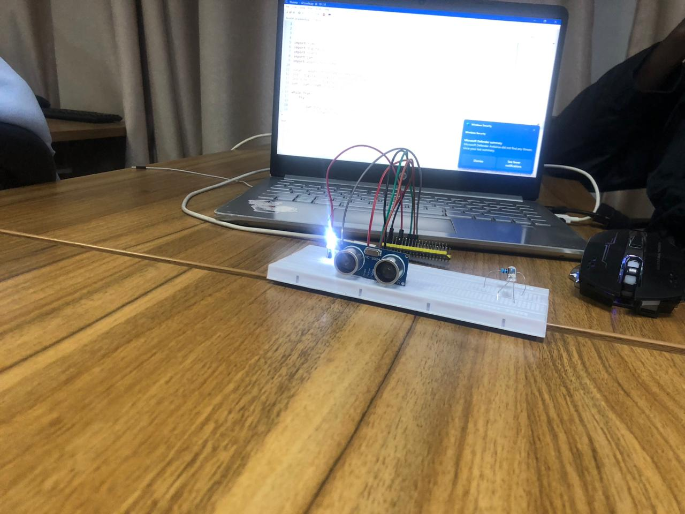
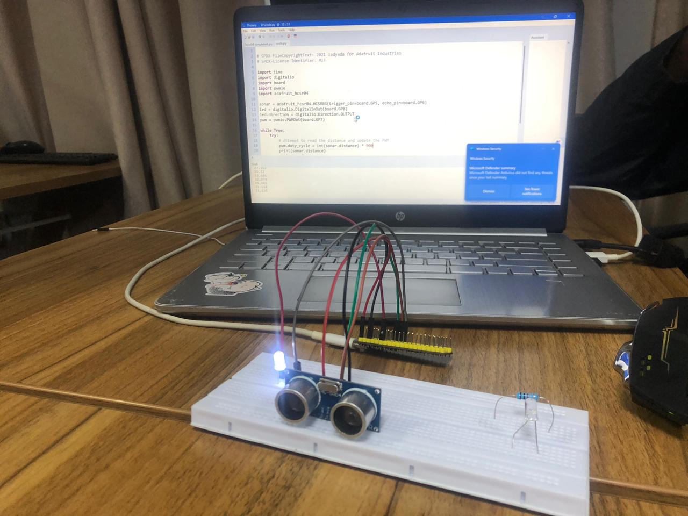

Week 5 elevated our embedded capabilities by introducing wireless connectivity to the Raspberry Pi Pico platform. Building upon the foundational knowledge from Week 4, we explored the Pico W's integrated Wi-Fi functionality and implemented a web server — transforming our microcontroller into a remotely accessible IoT device.
The Raspberry Pi Pico W is the wireless-enabled variant of the original Pico, incorporating an Infineon CYW43439 module that provides 802.11n Wi-Fi (2.4GHz) and Bluetooth 5.0 (Bluetooth Classic and LE). This addition transforms the Pico from a standalone microcontroller into a network-connected device capable of participating in IoT ecosystems.
Connecting to wireless networks requires specific MicroPython modules and proper configuration.
The network module provides the interface for Wi-Fi operations:
import network
import time
# Create Wi-Fi interface
wlan = network.WLAN(network.STA_IF)
# Activate the interface
wlan.active(True)
# Scan for available networks
networks = wlan.scan()
# Connect to a network
wlan.connect('SSID', 'password')
# Wait for connection
while not wlan.isconnected():
time.sleep(1)
print('Connected:', wlan.ifconfig())A web server enables remote interaction with the Pico W through any web browser — providing a user interface without dedicated applications.
A web server is software that listens for HTTP (Hypertext Transfer Protocol) requests from clients (web browsers) and responds with appropriate data (HTML pages, JSON, status codes). On the Pico W, we implement a lightweight HTTP server using MicroPython's socket module.
import socket
# Create TCP socket
addr = socket.getaddrinfo('0.0.0.0', 80)[0][-1]
s = socket.socket()
s.bind(addr)
s.listen(1)while True:
conn, addr = s.accept()
request = conn.recv(1024)
request = str(request)
# Parse the request path
if '/led/on' in request:
led.value(1)
response = 'LED turned ON'
elif '/led/off' in request:
led.value(0)
response = 'LED turned OFF'
else:
response = 'Pico W Web Server'
# Send HTTP response
conn.send('HTTP/1.1 200 OK\n')
conn.send('Content-Type: text/html\n')
conn.send('Connection: close\n\n')
conn.send(response)
conn.close()html = """<html>
<head><title>Pico W Control</title></head>
<body>
<h1>Raspberry Pi Pico W</h1>
<p>LED Status: {}</p>
<a href="/led/on">Turn ON</a>
<a href="/led/off">Turn OFF</a>
</body>
</html>"""We implemented a comprehensive web-based control interface for home automation:
<html>
<head>
<meta name="viewport" content="width=device-width, initial-scale=1">
<style>
body { font-family: Arial; padding: 20px; }
.card { border: 1px solid #ddd; padding: 15px; margin: 10px 0; }
.btn { padding: 10px 20px; background: #007bff; color: white; text-decoration: none; }
</style>
</head>
<body>
<h1>Home Automation</h1>
<div class="card">
<h2>Temperature</h2>
<p>{}°C</p>
</div>
<div class="card">
<h2>Lights</h2>
<a class="btn" href="/light/on">ON</a>
<a class="btn" href="/light/off">OFF</a>
</div>
</body>
</html>Effective debugging is essential for developing reliable embedded systems. We employed multiple strategies:
Beyond basic connectivity, we explored advanced networking capabilities:
The Pico W can function as a Wi-Fi access point, creating its own network:
ap = network.WLAN(network.AP_IF)
ap.active(True)
ap.config(essid='PicoW-Setup', password='password')
print('AP IP:', ap.ifconfig())The Pico W can act as an HTTP client to send data to cloud services:
import urequests
# Send data to a web service
response = urequests.get('https://api.example.com/data')
print(response.status_code)For IoT applications, MQTT provides lightweight messaging:
Network-connected devices require careful security attention:
Beyond network-based control, we implemented physical input handling through push buttons — a fundamental interaction paradigm in embedded systems.
Mechanical push buttons exhibit a phenomenon known as "contact bounce" — when the button is pressed or released, the contacts physically bounce, causing multiple rapid transitions that can be misinterpreted as multiple button presses. To mitigate this, we implemented a debouncing algorithm:
We implemented a toggle mechanism where each button press alternates the LED state:
This exercise demonstrated the intersection of input handling, state management, and output control — the foundational pattern upon which all embedded user interfaces are built.
We interfaced the HC-SR04 ultrasonic ranging sensor with the Pico W to measure distance to objects — a sensor commonly employed in obstacle detection, robotics navigation, and proximity sensing applications.
The HC-SR04 utilizes the time-of-flight principle to determine distance:
We configured the Pico W to:
Extending the ultrasonic measurement capability, I developed a comprehensive proximity alert system that integrates multiple output modalities to provide intuitive distance feedback.
The system implements a tiered alert mechanism based on measured distance:
This project exemplifies the integration of multiple subsystems — input sensing, conditional logic, and multi-modal output — into a cohesive embedded application. The combination of visual, auditory, and textual feedback ensures that users receive clear, unambiguous information regardless of their sensory capabilities or environmental conditions.




Week 5 transformed our understanding of embedded systems — from isolated devices to network-connected IoT nodes capable of remote monitoring and control. The ability to serve web pages directly from a microcontroller opens boundless possibilities for interactive projects and professional applications.